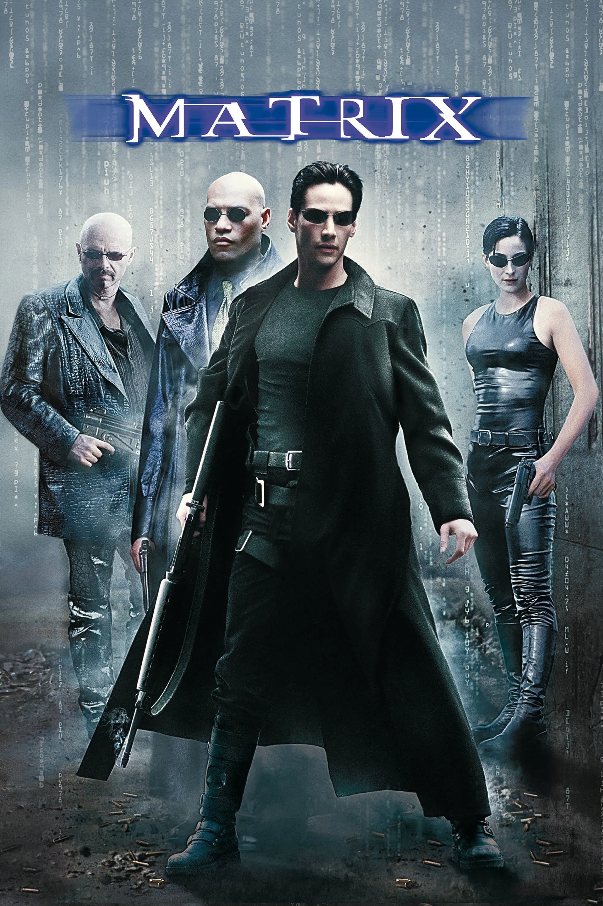
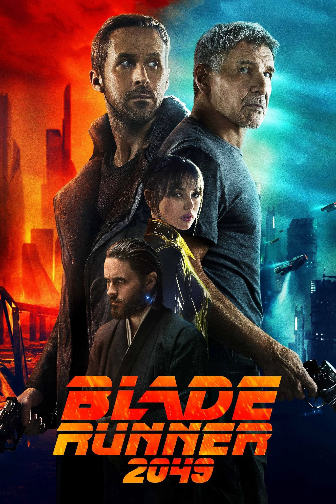
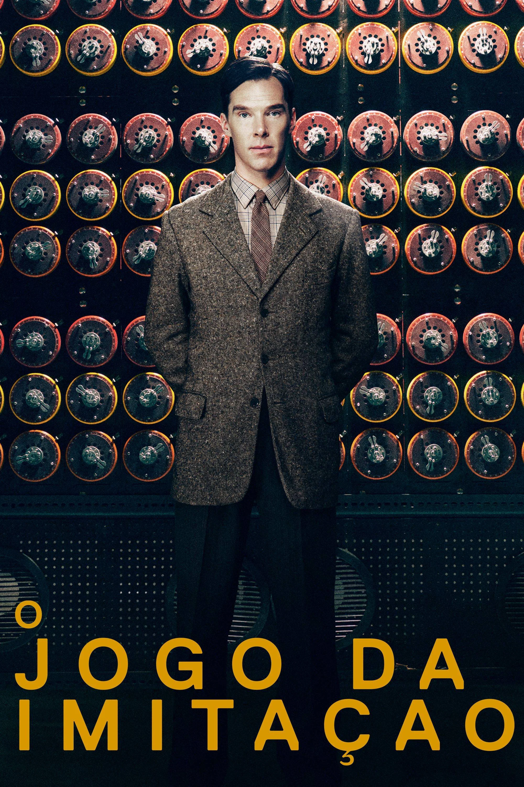

Matrix
Ano: 1999
Duração: 2h 16min
Direção: Lana Wachowski e Lilly Wachowski
Elenco: Keanu Reeves, Laurence Fishburne,
Carrie-Anne Moss
Um clássico da ficção científica que explora realidade simulada,
inteligência artificial e controle tecnológico sobre a humanidade.

Interestelar
Ano: 2014
Duração: 2h 49min
Direção: Christopher Nolan
Elenco: Matthew McConaughey, Anne Hathaway, Jessica
Chastain
Uma obra que une ciência, exploração espacial, tecnologia avançada e
decisões humanas em busca da sobrevivência da espécie.

Ex Machina
Ano: 2014
Duração: 1h 48min
Direção: Alex Garland
Elenco: Alicia Vikander, Domhnall Gleeson, Oscar
Isaac
O filme apresenta reflexões sobre inteligência artificial,
consciência, ética e os limites da criação tecnológica.

Blade Runner 2049
Ano: 2017
Duração: 2h 44min
Direção: Denis Villeneuve
Elenco: Ryan Gosling, Harrison Ford, Ana de Armas
Uma produção cyberpunk que discute identidade, humanidade,
inteligência artificial e os impactos da tecnologia no futuro.

O Jogo da Imitação
Ano: 2014
Duração: 1h 54min
Direção: Morten Tyldum
Elenco: Benedict Cumberbatch, Keira Knightley,
Matthew Goode
Conta a história de Alan Turing, matemático fundamental para a
computação moderna e para a quebra de códigos durante a Segunda
Guerra Mundial.
A Rede Social
Ano: 2010
Duração: 2h
Direção: David Fincher
Elenco: Jesse Eisenberg, Andrew Garfield, Justin
Timberlake
O filme mostra a criação do Facebook e discute empreendedorismo,
inovação, tecnologia e os conflitos por trás das grandes plataformas
digitais.